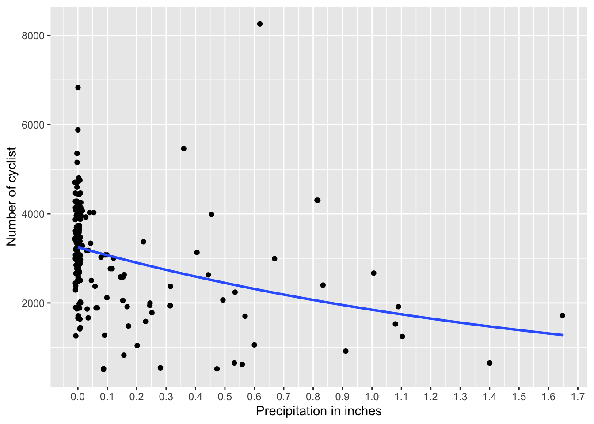
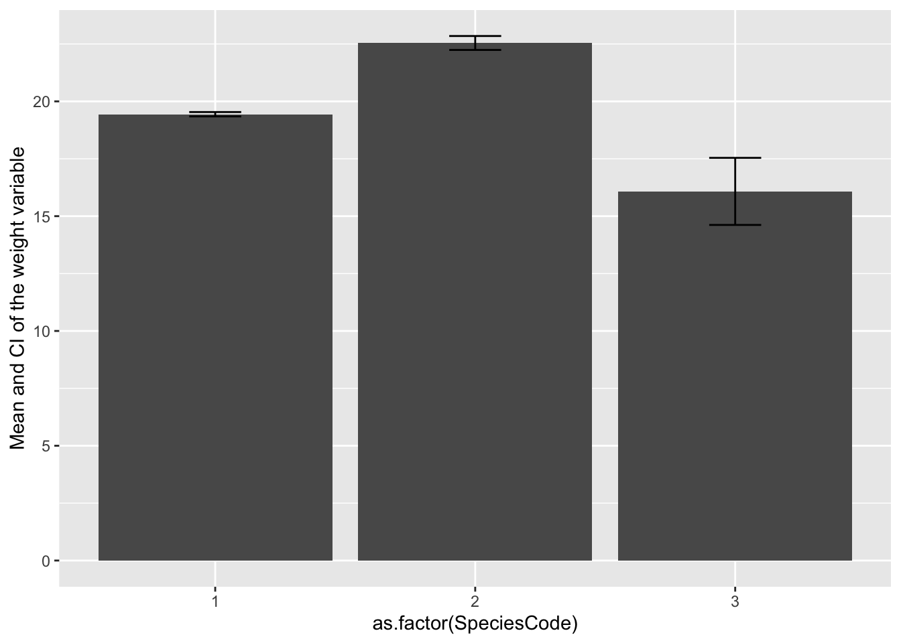

Chapter 18 Un cambio para modificar los gráficos
18.1 Beta regression
The method presented here is quite innovative (2010 onwards). Unfortunately there is not much information in the literature or the web about the method. You can find supplementary information in the Vignette of the package betareg.
References:
Cribari-Neto, F., and Zeileis, A. (2010). Beta Regression in R. Journal of Statistical Software, 34(2), 1–24. http://www.jstatsoft.org/v34/i02/.
Grün, B., Kosmidis, I., and Zeileis, A. (2012). Extended Beta Regression in R: Shaken, Stirred, Mixed, and Partitioned. Journal of Statistical Software, 48(11), 1–25. http://www.jstatsoft.org/v48/i11/.
Article on the beta regression and other R packages with other functions can be found here, Douma and Weedon 2019
18.2 What is a beta regression?
The beta regression is an approach under GLM “Generalized linear models”. The beta regression models dependent variables distributed with the beta distribution. Data with the beta distribution include proportions and ratios, where the values \(x\) are between 0 and 1 but not inclusive (i.e. \(0 < x< 1\)). In some packahes 0 and 1 can be part of the data set. In addition to producing a regression that maximizes the likelihood (both for the mean and the precision of a response distributed in beta), bias-corrected estimates are provided.
The values of the response variable satisfy \(0 < x < 1\). Consequently, if the values are 0 or 1, it is necessary to change them to \(0= 0.001\) and \(1 = 0.999\). The numbers cannot be 0 or 1, they must be greater than 0 and less than 1. Indeed, changing the values to \(0.001\) and \(0.999\) has no impact on the interpretation of the data, unless all the data are only \(0\) or \(1\), in which case this tool should not be used but a logistic regression.
The betaref package is used to perform the beta regression. The package is quite powerful and provides a lot of information about the data. The package is used to calculate the mean, the variance, the precision, and the quantiles of the data. The package also provides the AIC, BIC, and the log-likelihood of the model. Note that the focus of the GLM model is to develop a regression with the response through a link function and a linear predictor. Just like normal GLM, there are numerous link functions, which can be useful such as “logit”, “probit”, “cloglog”, “cauchit”, “log”, “loglog” to linearize the data.
Almosty all of the information presented here comes from Cribari-Neto and Zeileis (Beta Regression in R).
Consult the pdf, https://cran.r-project.org/web/packages/betareg/betareg.pdf for a package description and more details.
Typical analysis errors with data that are fractions.
We look at an example. Here the relationship between per capita public health spending in 156 countries and the percentage of girls who are not in school.
Data from the “World Development Agency”
18.3 What is the problem with the data?
library(ggversa)
#Edu_Salud_Gastos_GDP
ggplot(Edu_Salud_Gastos_GDP, aes(Gasto_Salud_percapita, Porc_Ninas_no_escuela))+
geom_point()+
geom_smooth(method = lm)+
xlab("Per capita public health spending")+
ylab("Percentage of girls not going to school")## `geom_smooth()` using formula = 'y ~ x'## Warning: Removed 46 rows containing non-finite outside the scale range
## (`stat_smooth()`).## Warning: Removed 46 rows containing missing values or values outside the scale range
## (`geom_point()`).
Note:
- there are negative proportion values
- the confidence interval is also negative
- the dispersion of the data in y around the mean is not equal as public health spending per capita changes (in x).
Models using the beta distribution solve these issues.
18.4 First step, what is a beta distribution?
The most important thing about the beta distribution is that the values NEVER are less than 0 or greater than 1 (i.e. \(0 < x < 1\)). In addition, the confidence intervals cannot be less than 0 or greater than 1.
Here are some examples of the beta distribution. The beta distribution is calculated with two parameters, shape 1 or \(\alpha\) and shape 2 or \(\beta\). We will not go into these parameters, although you can go to the Wikipedia page for more information. Note that if the parameters are not equal (\(\alpha \neq \beta\)), the distribution is not symmetrical. There is always a tail that extends to small or large values.
Here a series beta distributions. We will not go into how these these parameters are calculated, although you can go to the Wikipedia page for more information. Note that if the parameters are not equal (\(\alpha \neq \beta\)), the distribution is not symmetrical. There is always a tail that extends to small or large values.

18.5 Wikipedia
On the wikipedia page, you can see how the distribution changes when the parameters change.

18.6 Proporción de fumadores por diferentes paises.
Los datos provienen de World Bank en el siguiente enlace, Smokers. En el archivo se encuentra información sobre 187 pais y la proporción de población mayor de 15 años que fuman.
Los datos están debajo pestaña de “Los Datos”
## Rows: 187 Columns: 13
## ── Column specification ────────────────────────────────────────────────────────
## Delimiter: ","
## chr (4): Country_Name, Country_Code, Indicator_Name, Indicator_Code
## dbl (9): Y2000, Y2005, Y2010, Y2011, Y2012, Y2013, Y2014, Y2015, Y2016
##
## ℹ Use `spec()` to retrieve the full column specification for this data.
## ℹ Specify the column types or set `show_col_types = FALSE` to quiet this message.| Country_Name | Country_Code | Indicator_Name | Indicator_Code | Y2000 | Y2005 | Y2010 | Y2011 | Y2012 | Y2013 | Y2014 | Y2015 | Y2016 |
|---|---|---|---|---|---|---|---|---|---|---|---|---|
| Honduras | HND | Smoking prevalence, total (ages 15+) | SH.PRV.SMOK | 3.9 | 3.1 | 2.5 | 2.4 | 2.4 | 2.3 | 2.2 | 2.1 | 2.0 |
| Ethiopia | ETH | Smoking prevalence, total (ages 15+) | SH.PRV.SMOK | 4.8 | 4.6 | 4.5 | 4.4 | 4.5 | 4.4 | 4.4 | 4.4 | 4.4 |
| Congo, Rep. | COG | Smoking prevalence, total (ages 15+) | SH.PRV.SMOK | 5.7 | 9.1 | 14.7 | 16.1 | 17.9 | 19.8 | 22.0 | 24.2 | 26.9 |
| Ghana | GHA | Smoking prevalence, total (ages 15+) | SH.PRV.SMOK | 5.9 | 5.0 | 4.4 | 4.3 | 4.3 | 4.1 | 4.1 | 4.0 | 3.9 |
| Niger | NER | Smoking prevalence, total (ages 15+) | SH.PRV.SMOK | 6.4 | 6.7 | 7.1 | 7.2 | 7.3 | 7.4 | 7.5 | 7.6 | 7.7 |
| Nigeria | NGA | Smoking prevalence, total (ages 15+) | SH.PRV.SMOK | 7.7 | 7.0 | 6.3 | 6.2 | 6.1 | 6.1 | 5.9 | 5.8 | 5.8 |
Primero vamos a convertir los datos en proporción ya que el programa tiene que utilizar datos mayor de 0 y menor de 1. Seleccionamos el año 2000 y creamos un histograma de la distribución.
Smokers$Y2000P=(Smokers$Y2000)/100 # convertir en proporción
Smokers %>% dplyr::select(Country_Name, Y2000P)## # A tibble: 187 × 2
## Country_Name Y2000P
## <chr> <dbl>
## 1 Honduras 0.039
## 2 Ethiopia 0.048
## 3 Congo, Rep. 0.057
## 4 Ghana 0.059
## 5 Niger 0.064
## 6 Nigeria 0.077
## 7 Oman 0.082
## 8 Barbados 0.083
## 9 Eritrea 0.087
## 10 Benin 0.091
## # ℹ 177 more rows18.7 Convertir el promedio y varianza en shape \(\alpha\) y \(\beta\)
Convertir el promedio y la varianza de los datos en los valores del shape \(\alpha\) y \(\beta\). Se usa la siguiente para calcular los shapes. Los valores esperado y la varianza se comportan de forma distinta.
\[E(X) = \frac{\alpha}{\alpha+\beta}\]
\[V(X) = \frac{\alpha\beta}{(\alpha+\beta+1)(\alpha+\beta)^2}\]
Usando el promedio y varianza se puede convertir en \(\alpha\) y \(\beta\) con la siguiente ecuaciones
\[\alpha = \frac{1-mu}{(var-1)/mu}*mu^2\] \[\beta = \alpha*(\frac{1}{mu}-1)\] Aquí un script para convertir los parametros en shape
estBetaParams <- function(mu, var) {
alpha <- ((1 - mu) / var - 1 / mu) * mu ^ 2
beta <- alpha * (1 / mu - 1)
return(params = list(alpha = alpha, beta = beta))
}
#mean(Smokers$Y2000P)
#var(Smokers$Y2000P)
estBetaParams((mean(Smokers$Y2000P)), (var(Smokers$Y2000P)))## $alpha
## [1] 3.592488
##
## $beta
## [1] 9.181559Ahora comparamos la distribución beta y normal de los datos de los fumadores de mayores de 15 años
Smokers$Y2000P=(Smokers$Y2000)/100 # convertir en proporción
x <- seq(0, 1, len = 100)
#mean(Smokers$Y2000P)
#var(Smokers$Y2000P)
ggplot(Smokers, aes(Y2000P))+
geom_histogram(aes(y=..density..), colour="white", fill="grey50")+
stat_function(aes(x = Smokers$Y2000P, y = ..y..), fun = dbeta, colour="red", n = 100,
args = list(shape1 = 3.593, shape2 = 9.185))+
stat_function(fun = dnorm,
args = list(mean = mean(Smokers$Y2000P, na.rm = TRUE),
sd = sd(Smokers$Y2000P, na.rm = TRUE)),
colour = "green", size = 1)+
xlab("Proporción de fumadores de mayor \n de 15 años por Pais")+
ylab("Densidad")+
annotate("text", x = .5, y = 4.2, label = "Verde: dist Normal", color="darkgreen")+
annotate("text", x = .5, y = 3.7, label = "Verde: dist Beta", color="red")+
xlim(-0.1, 0.9)## Warning: Using `size` aesthetic for lines was deprecated in ggplot2 3.4.0.
## ℹ Please use `linewidth` instead.
## This warning is displayed once every 8 hours.
## Call `lifecycle::last_lifecycle_warnings()` to see where this warning was
## generated.## Warning: The dot-dot notation (`..density..`) was deprecated in ggplot2 3.4.0.
## ℹ Please use `after_stat(density)` instead.
## This warning is displayed once every 8 hours.
## Call `lifecycle::last_lifecycle_warnings()` to see where this warning was
## generated.## `stat_bin()` using `bins = 30`. Pick better value with `binwidth`.## Warning: Removed 2 rows containing missing values or values outside the scale range
## (`geom_bar()`).
Calculando el intervalo de confianza del promedio de una distribución beta. Se necesita los siguientes paquetes simpleboot , boot.
## Simple Bootstrap Routines (1.1-8)library(boot) # paquete para calcular el intervalo de confianza de una distribución beta
n=187 # El tamaño de muestra de los datos
alpha = 3.593 # estimado de la función arriba
beta = 9.185
x = rbeta(n, alpha, beta)
x.boot = one.boot(x, median, R=10^4) # Aquí se usa la mediana, pq el promedio *mean* sera sesgado a la derecha.
boot.ci(x.boot, type="bca")## BOOTSTRAP CONFIDENCE INTERVAL CALCULATIONS
## Based on 10000 bootstrap replicates
##
## CALL :
## boot.ci(boot.out = x.boot, type = "bca")
##
## Intervals :
## Level BCa
## 95% ( 0.2678, 0.3120 )
## Calculations and Intervals on Original Scale